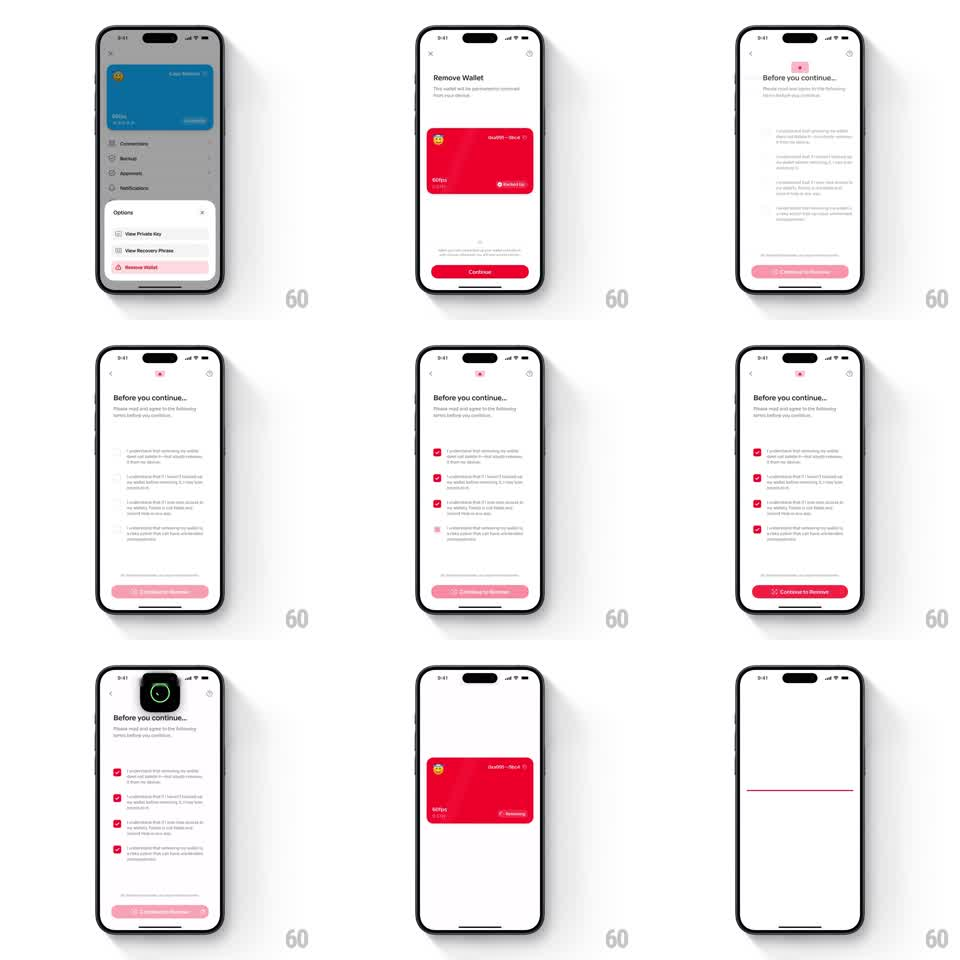

Media
Frame-by-frame

Rebuild this interaction 1:1: Family's wallet removal flow - a danger-zone sequence: options sheet with "Remove Wallet", a confirmation screen showing the wallet card, a four-item acknowledgment checklist with springy checkboxes that gate the Continue button, a biometric prompt, and a final morphing deletion of the card.

Rebuild this interaction 1:1: Family's wallet removal flow - a danger-zone sequence: options sheet with "Remove Wallet", a confirmation screen showing the wallet card, a four-item acknowledgment checklist with springy checkboxes that gate the Continue button, a biometric prompt, and a final morphing deletion of the card. ## Integration Integration: stack-agnostic spec - springs given as stiffness/damping, timed motions as duration + curve; map every value to your framework and animation library of choice. ## Scene Wallet detail with options sheet (View Private Key, View Recovery Phrase, Remove Wallet in red). Then "Remove Wallet" screen: red wallet card preview, red Continue button. Then "Before you continue..." checklist screen: four checkbox statements, disabled pink button that becomes solid red "Continue to Remove" when all are checked. Biometric (Face ID-style) sheet follows, then deletion. ## Motion spec Pattern: multi-step destructive confirmation with gated progress. - Checkboxes: tap toggles with a springy scale (0.85 -> 1.1 -> 1, spring ~400/18, ~250ms), red fill draws in. - With each check, the bottom button's opacity/saturation rises; at 4/4 it snaps to full red with a label swap to "Continue to Remove" (150ms). - Biometric prompt slides up as a native-style sheet (~300ms). - On success: the wallet card morphs away - it collapses vertically to a thin line at its center (~350ms, ease-in) and disappears; the screen transitions to the emptied state. ## Calibration - The checklist gating is the safety core: button visibly inert until all four are checked. - Deletion morph should feel like the card was erased, not dismissed. ## Reduced motion Checkboxes fill without scale; card fades out (200ms) instead of collapsing. ## Don't miss - Red is reserved for the destructive path only (remove row, final button, card). - The collapse-to-line happens at the card's own position before the screen changes.